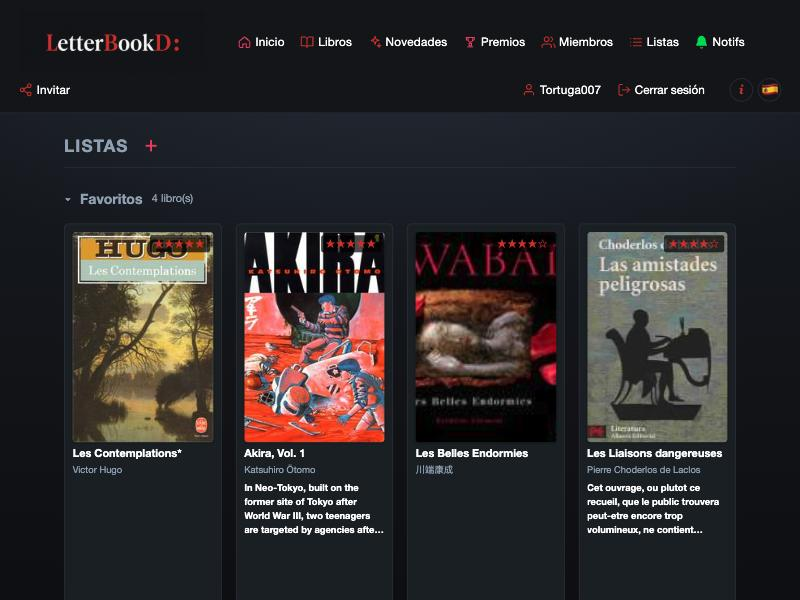

Listas
Para qué sirve: Organizar tus lecturas: favoritos, por leer, libros ya leídos y todas las listas temáticas que quieras crear (géneros, temas, retos de lectura).

Recorrido
Tres listas del sistema están siempre presentes: «Favoritos» (corazón), «Por leer» (cola de espera) y «Todos mis libros» (todo lo que has registrado). Van seguidas de tus listas personales. Cada lista se pliega o despliega con su chevrón, muestra su contador de libros y expone sus libros en forma de portadas con las estrellas de nota superpuestas. Un botón «+» arriba crea una lista nueva.
Cadenas de acción
Cada fila describe un disparador en la interfaz, el modal o formulario que abre, y el efecto producido.
| Disparador | Modal / Campos | Efecto |
|---|---|---|
| Botón «+» junto a «Listas» | Campo «Título» (120 caracteres como máximo). | Crea una lista nueva vacía. Aparece al instante en la columna izquierda, lista para llenarse desde las fichas de libros. |
| Chevrón delante de una lista | — | Abre o cierra el acordeón. Solo puede estar abierta una lista a la vez. |
| Icono de papelera junto a un libro (dentro de una lista) | Formulario POST de confirmación. | Quita el libro de la lista. El libro sigue en el catálogo y en tus otras listas. |
| Icono de papelera en una lista personal | Formulario POST de confirmación. | Elimina la lista completa. Los libros se conservan; solo desaparece la lista. Las listas del sistema no se pueden eliminar. |